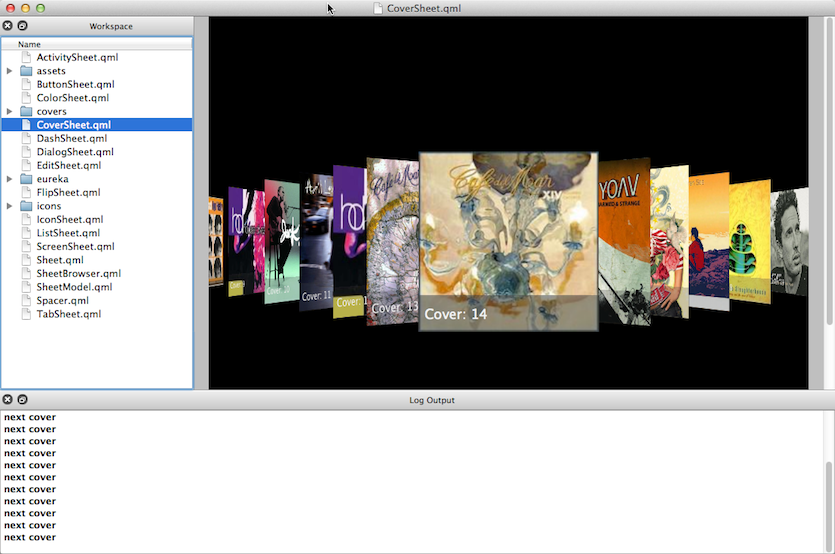
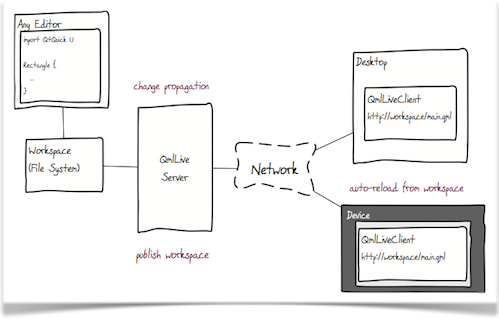
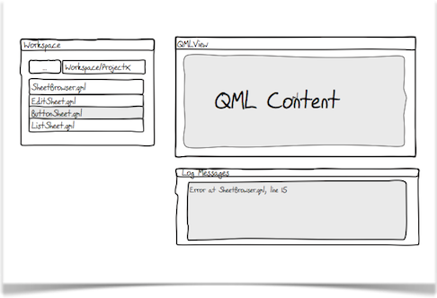
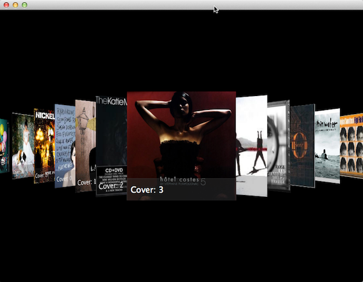

Concepts
\chapterLive Reloading
During a typical user interface design phase, designers create many graphical documents describing the desired user interface. Transferring such graphical visions into a running source code is difficult and time consuming.

Not only is it a tedious process, it often comes with great compromises on both sides. The designer's vision is often not fully replicable with the underlying technology. So it takes many iterations to come to an optimal solution.
A lot of time-consuming editing is needed to finally reach a compromise that satisfies the designer's vision and how it is realized in code. Each iteration is a small step towards the desired user experience goal. Qt, with the Qt Quick technology, already shortens the gap between vision and product by introducing a more design oriented language (QML). However, there is still room for improvement, which is why QmlLive was created.
QmlLive is managed by a central bench watching your project workspace. A change on a file inside the workspace is automatically detected and immediately reflected onto one or more local rendering areas or to connected remote clients. A team can develop a user interface very quickly and precisely on a PC and simultaneously display it on one or several local and/or remote clients. The clients can run on any desktop or networked embedded device that supports Qt5 and QmlLive.

Local Sessions
For a local session you only need the QmlLive Bench. It contains all of the required components in an easy-to-use interface. You type and save, we show you the outcome on your PC in a fraction of a second. This is ideally suited for a multi-monitor setup where you see your code on one display and the the live results of your changes on the other display. Seamless user interface creation is the target, where you see every change immediately. This is great for sketching out a scene or getting the last touch on animation behavior. It also encourages you to think in terms of components; instead of developing a whole scene, you can can break apart the scene into smaller parts or components. You can work on these small components and see how they look standalone or embedded into a larger scene.

Remote Sessions - putting delight on your devices
A scene rendered on a PC display will rarely look the same as on the target display for the embedded device. There are subtle changes in the color appearance, pixel density, font rendering and proportions. So it is vital to ensure that a user experience designed on a PC looks just as brilliant on the embedded device. In the past this was always cumbersome and required that you manually copy the code to the device and restart the application. With QmlLive Bench and QmlLive Runtime you simply connect to the device, propagate your workspace and from then on all changes are reflected on the device display. Of course, you can also connect more devices, or devices with different sizes.

\chapterDisplay, Screens, Panels, Components, Fragments
+- Display | +- Panel | +- Screen | +- Panel | +- Component | +- Fragment
To better structure a user interface, we normally assume a hierarchy of user interface elements. For simplicity we name them display, screen, panel, component, and fragment. They form a hierarchy from large chunks of user interfaces to the smaller entities and internals of the user interface. The main benefit is that it allows us to share a common vocabulary with the customers and ensures the design is aligned with the shared definition of user interface elements.
We define the user interface as a root element called the display. The display contains a collection of screens or panels, where each screen covers the entire physical display. A screen consists of several panels providing the visual structure defined by the design team. Each panel itself consists of a set of components, which are reusable user interface elements. These components contain fragments, which are user interface elements, an internal structure which is not exposed to the user interface developer.
Designing a user interface requires an understanding of the initial display layout and its screen navigation structure, and of the structure of individual screens and their panels. It is also required to define a common set of components to be used inside the panels. The fragments are implementation-specific.
\chapterUX Sheets - visual component testing
UXSheet gives guidance on how to successfully develop user interface components with the QmlLive live-preview technology.
Over time, developing applications in QML can become complex, especially if there is no clear concept for (isolated) components. Exactly the same is true for designing user interfaces. For a successful translation of the designer's vision into a programmer's code, the vision needs to be broken down into smaller user interface elements (i.e. screen, panel, components and so on). Each user interface element needs to be validated on its own and translated into source code.
Now, to better compare this vision with what a programmer understands, a graphics sheet can be directly implemented with Qt Quick as a series of standalone documents collectively called a UXSheet. These sheets act as the interface between designer and programmer. The screen below shows how a sample sheet could look.